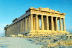
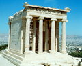

É o templo mais importante e característico da antiga civilização Grega. Ele foi dedicado a Athena Parthenos, a deusa e patrona da cidade de Atenas. Sua construção data de 447 a 438 A.C. A decoração do templo foi completada apenas em 432 A.C. sua construção foi iniciada por Péricles, sendo que o supervisor de toda a obra foi Pheidias, o famoso escultor ateniense. Os arquitetos do prédio foram Iktinos and Kallikrates
O templo de Atena Nike
O templo foi construído cerca do ano 420 A.C. pelo arquiteto Kallikrates. Sua construção seguiu o estilo Jônico com quatro colunas na frente de cada um de seus lados. A frisa na seção superior das paredes mostra a conferência dos deuses no lado leste e cenas de batalhas nos outros três lados. Um parapeito de mármore representa Nikae (Vitórias) e protege a borda do Bastião onde o templo foi erguido.